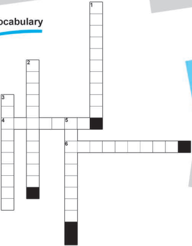

Workbook · Let’s Discover
Printed pages 10–13 · images 7–10 only. Speaking, Australia reading, crossword, present perfect, reported speech, listening and your own email.
Page 10 · Speaking
Module 2 · Unit 3 · Let’s Discover · Journeys Around the World
- Work in pairs. Discuss these questions.
Page 10 · Reading: My Favourite Country
- Read the following text and do the tasks below.
My Favourite Country
Last summer, my family and I had the opportunity to travel and discover the beautiful continent of Australia.
It was not an easy choice among the other beautiful places in the world, but this country has always fascinated us with its culture. In fact, Australia is one of the richest continents and is also one of the largest countries in the world. It is located in the southern hemisphere, and all its states use the Australian dollar. Australian English is the national and popular language of the country. It is similar to English in grammar and spelling with some notable exceptions.
When my parents learned about wonders of Australia that awaited us, them immediately bought airline tickets.
We woke up early in the morning to catch a direct flight to Australia. The flight lasted about 20 hours. Finally, we arrived in Sydney and settled in a hotel.
The next day, we visited the Opera House which had a beautiful architecture. It was a perfect day. In the afternoon we went to Taronga Zoo to see the famous Australian animals like kangaroos and koalas. The following days, we enjoyed the beaches, shopping centers and beautiful museums of Sydney. Unfortunately, we had to prepare our luggage to return home to Montreal before I could realize that our seven-day vacation had already passed.
The passage is reproduced as printed, including “them immediately” and its geographical and language descriptions; those descriptions are the textbook’s, not independently verified claims.
Key words
| Word / phrase | Meaning printed in the book |
|---|---|
| opportunity | a chance to do something |
| continent | a large mass of land |
| fascinated | attracted to something |
| hemisphere | a half of the Earth |
| exceptions | things that is not included |
| settled | stayed |
Page 11 · Reading A: Answer the questions
A- Answer the following questions.
Open answers are saved for discussion; use the reading and guidance for review rather than exact-string scoring.
Page 11 · Reading B: True or false
B- Decide whether the sentences are True/T/ or False /F/.
Page 11 · Vocabulary: Crossword
Vocabulary

Enter one word for each printed clue. Responses are checked by word, rather than altering the original grid. Clue 5 is singular (“something”), and its nine-cell entry is exception; the page 10 glossary uses the plural exceptions.
Page 12 · Grammar: Present perfect
Grammar · Revision of the present perfect tense
The present perfect tense is used to express:
- an event that started in the past and the effect of the event is now continuing.
- an event that started in the past and is still going on.
| Form | Printed examples |
|---|---|
| Affirmative | I, you, we, they have seen / He, she, it has seen |
| Negative | I, you, we, they haven’t seen / He, she, it hasn’t seen |
| Interrogative | have I, you, we, they seen the film? / has he, she, it seen? |
A - (Put the verbs into the correct form (present perfect tense.
e.g. We (buy) have bought a new lamp.
Enter the complete verb phrase for each numbered sentence. Contractions and their expanded forms are accepted where appropriate.
Page 12 · Reported speech reference and B
Reported Speech
When we tell someone what another persone said we use reporting verbs like: (said , told),and we do the following changes to:
1- the tense of the verbs
| Tense | Direct Speech | Reported Speech |
|---|---|---|
| present simple → past simple | I like ice cream. | She said (that) she liked ice cream. |
| present continuous → past continuous | I am working in London. | She said (that) she was working in London. |
| present perfect → past perfect | I haven’t seen Julie. | She said (that) she hadn’t seen Julie. |
2-the pronouns / possessive adjectives.
| Direct | Reported |
|---|---|
| I | he / she |
| we | they |
| you | I / we |
| us | them |
| our | their |
| your | my / his / her / their |
| me | him/her |
| my | her/ his |
B- Select the correct answer:
The fourth printed sentence has two bracketed choices; the extra on-screen control is for its second bracket. The misspelling “persone” in the source is retained.
Page 13 · Reported speech C
C- Write the sentences in reported speech.
Open rewrites are reviewed by the teacher, not exact-string scored: optional “that”, contractions, and context-appropriate time references can vary. The book does not establish when Saturday is reported.
Page 13 · Reported speech D
D- Change these sentences into reported speech.
Open rewrites are saved for review rather than scored. “My job is easy to me” is the wording printed in item 7; it is not silently corrected.
Page 13 · Listening: Sami and Sally
Listen to Sami and Sally speaking about their journeys to some countries and do the tasks below.
Audio required; the recording was not supplied. These six responses are saved as practice only and are not scored. No listening answer key or transcript has been invented.
A teacher should use the official recording to review these responses. The illustration and exercise prompts do not establish the answers.
Page 13 · Writing: Your journey
Write an email to a friend about a journey you had.
Keep in mind
- We begin emails with “Dear.....................” then ”how are you“.
- We use: “First”, “Then” “Last of all” to put ideas in order.
- We can finish with “Bye“.